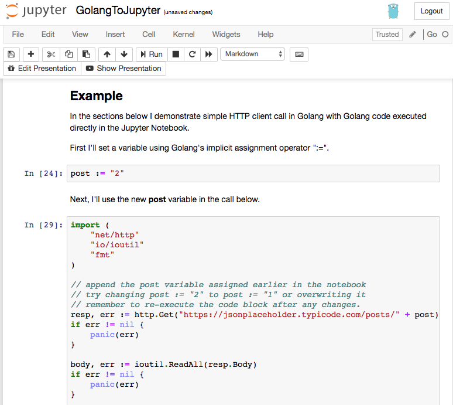
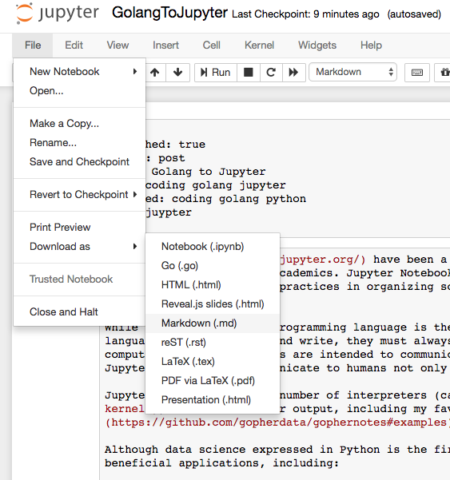

Jupyter Notbooks have been a popular technology in the Python data science community for a while now, especially in academics. Jupyter Notebooks are a way to mix inline, executable code with documentation in a presentation format. Best practices in organizing source code are not always the most efficient at communicating it’s functionality to a user.
While the intention of a programming language is the abstraction of computational complexity into a simplified language humans can read and write, they must always weigh toward the efficiency of the primary interpreter, the computer. Jupyter Notebooks are intended to communicate source code to humans first and computers second. We can use Jupyter Notebooks to communicate to humans not only the source but the interpreted result.
Jupyter can use a growing number of interpreters (called kernels) to run and render output, including my favorite, Golang.
Although data science expressed in Python is the first and most popular use of Jupyter Notebooks, I see a lot of other beneficial applications, including:
- Programming tutorials in a variety of languages.
- Coding Best practices and style guides.
- Technical articles and blogs.
- Leveraging static site generators like Jekyll and Hugo
Beyond the ability to execute code in-line, the most useful features to me are exporting these notebooks as Markdown. Site builders like Jekyll and Hugo use Markdown to generate beautiful static websites and blogs.

Example
In the sections below I demonstrate simple HTTP client call in Golang with Golang code executed directly in the Jupyter Notebook.
First I’ll set a variable using Golang’s implicit assignment operator “:=”.
post := "2"
Next, I’ll use the new post variable in the call below.
import (
"net/http"
"io/ioutil"
"fmt"
)
// append the post variable assigned earlier in the notebook
// try changing post := "2" to post := "1" or overwriting it
// remember to re-execute the code block after any changes.
resp, err := http.Get("https://jsonplaceholder.typicode.com/posts/" + post)
if err != nil {
panic(err)
}
body, err := ioutil.ReadAll(resp.Body)
if err != nil {
panic(err)
}
fmt.Printf("Getting Post #%s\n", post)
fmt.Printf("Raw JSON: %s\n", body)
Getting Post #2
Raw JSON: {
"userId": 1,
"id": 2,
"title": "qui est esse",
"body": "est rerum tempore vitae\nsequi sint nihil reprehenderit dolor beatae ea dolores neque\nfugiat blanditiis voluptate porro vel nihil molestiae ut reiciendis\nqui aperiam non debitis possimus qui neque nisi nulla"
}
289 <nil>
If you are reading this article on https://mk.imti.co then what you see here was exported from Jupyter Notebooks on my Mac in the Markdown format and saved to Github repository for this site. https://mk.imti.co is a static website automatically generated by Github using Jekyll.

Although I could easily save this Notebook as HTML, site builders like Jekyll and Hugo use Markdown to transform the content into the structure and style of my site. Markdown along with a sitebuilder allows me to present the notebook in a format that fits my site. Other options include:
- providing the Notebook for download.
- linking to Jupyter’s nbviewer
- exported Markdown: 2018-06-10-golang-to-jupyter.md
- …and of course the page you are reading.
You can run, modify or extend this article in a Jupyter Notebook server on your local workstation.
Getting Started with GO in Jupyter Notebooks
- Install the Anaconda package manager.
- Download Anaconda for Python 3.6 on Mac
- Install the gophernotes golang kernel.
go get github.com/gopherdata/gophernotesmkdir -p ~/Library/Jupyter/kernels/gophernotes~/src/github.com/gopherdata/gophernotes/kernel/* ~/Library/Jupyter/kernels/gophernotes
NOTE: Your path to Go source may be $GOPATH/src and not ~/src/.
From a directory containing (or will contain) your notebooks, run:
jupyter notebook
This will fire up a Jupyter Notebooks server running on port 8888. You should be able to browse to http://localhost:8888/
You can test out the gophernotes Golang kernel by downloading and altering this article here.
Resources
- Jupyter Notbooks golang kernel: gophernotes
- Installing Jupyter Notbooks
- Jupyter Notbooks Documentation
- nteract - desktop application
- Markdown-Cheatsheet
This blog post, titled: "Golang to Jupyter: Golang with Jupyter Notebooks" by Craig Johnston, is licensed under a Creative Commons Attribution 4.0 International License.